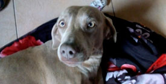

Hembra raza waimaraner de 1 año y 8 meses busca novio(solo realmente interesados y con macho puro)
Hembra raza waimaraner de 1 año y 8 meses busca novio(solo realmente interesados y con macho puro)
LA PERRA SE ENCUENTRA PROXIMIDAD DE ENTRAR EN CELO , PREFERENTEMENTE , QUE SEA ,DE COLOR CHOCOLATE , PERO TAMBIÉN PODRIA, SER DORADO O NEGRO,

Hermoso ejemplar - Schnauzer mini blanco - Carnet sanitario al dia. Excelentes gen. Si queres cruzar tu Schnauzer mini llamame o escribieme por whatsapp o mensaje de exto - (Claro) 261 300 3068

Tengo un bulldog frances vaquira con certificado del FCA, busco una compañera para Romeo, tiene 2 años.

Se trata de un dogo de 65 kilos en perfecto estado de salud . Comunicarse a mi WhatsApp al 223 454 6518 . Cobro el servicio .

Soy una perra Welsh Terrier con muy buen Pedigree que busca un novio. Soy de zona norte BsAs, Olivos. Tengo 5 años, dentadura perfecta